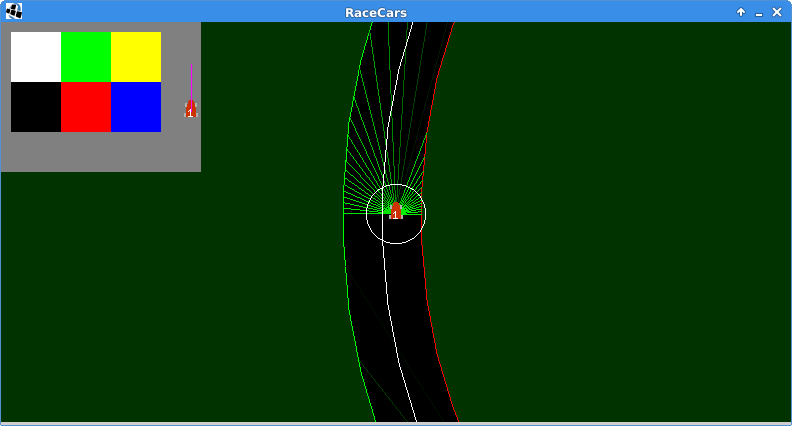
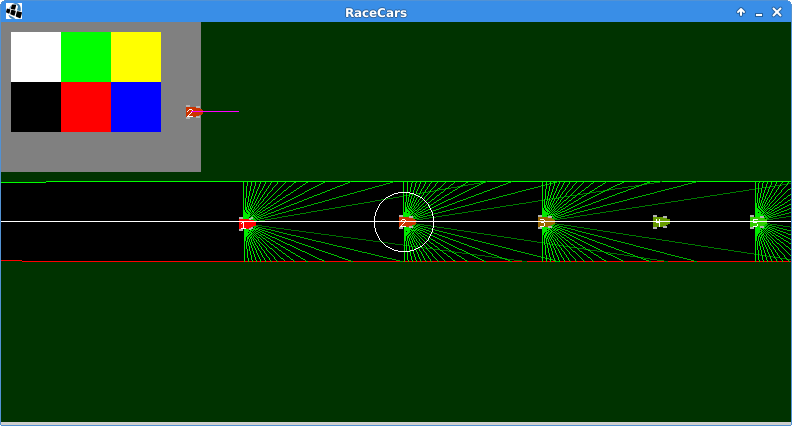
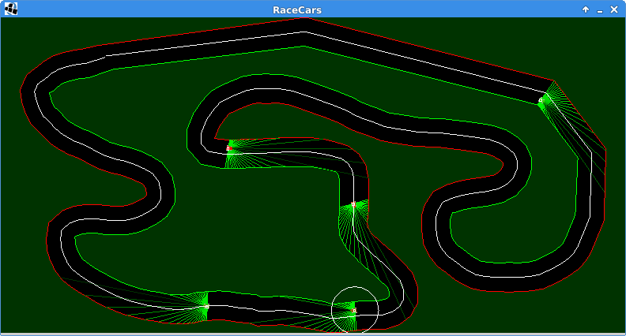

JavaScript implementation of the 2013 iOS game Pathogen.
Games may be played within a single browser or across the internet via a game ID.
Images for icons and animations come from sprite maps of the original app apk.
Clients are served and multiplayer games are managed by a central AWS EC2 server.
An equirectangular image of the Earth transforms from a rectangular view to a sphere.
Virtual World
Aug. 2018 - Nov. 2018
Created 3D virtual world in C using the GLFW api for OpenGL.
Explored beyond basic tutorial to render spheres by managing primitive triangles with VAOs/VBOs/EBOs and GLSL-programmed shader programs.
Textured in-game screen with real-time video forwarded from smart phone’s camera.
Textured sphere with 360° video, mp4 loaded with C++ OpenCV object file.
FRC Robotics
Aug. 2014 - May 2018
Developed most of and maintained the team’s robot code.
Interfaced with I2C to collect LIDAR data, gyro rotational data, wheel encoders, and HAL magnetic trip-sensors. Also built the team’s first vision system.
Worked with team Captain and Leads and mentored younger students.

An autonomous car navigating a bend using distance measurements from the track.

A group of autonomous cars each with their own virtual sensors.

An example of a user-drawn track, demonstrating the cars' ability to navigate new paths.
Virtual Racetrack
Feb. 2017 - June 2017
Cars race either autonomously or manually on custom 2D single-tracked courses.
Autonomous cars navigate using virtual LIDAR data: a fan of distances to track edges.
Cars steered by a PID control system navigated the courses better than I did usually.
Implemented a multiplayer interface with programmable clients to invite users to provide a custom algorithm for controlling their cars given the virtual LIDAR data.